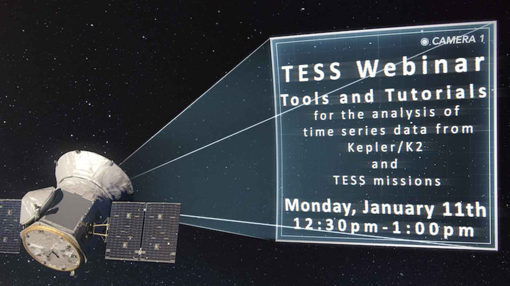
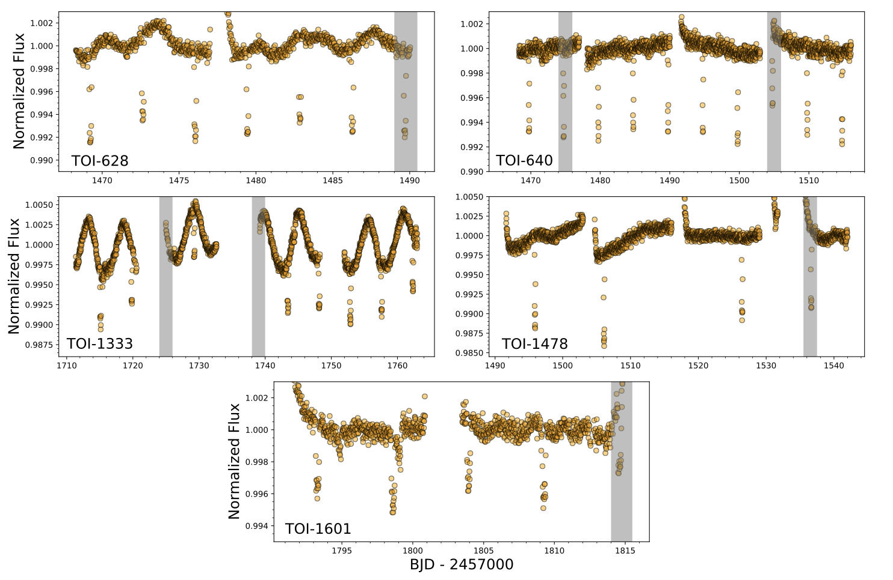
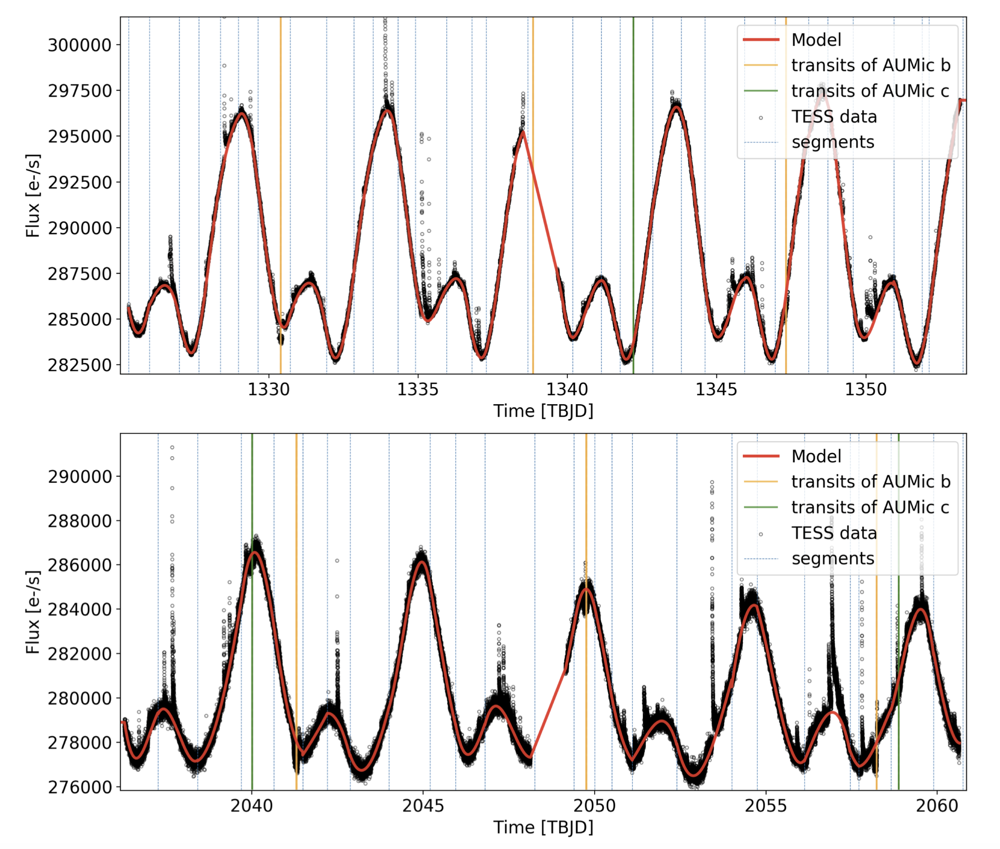
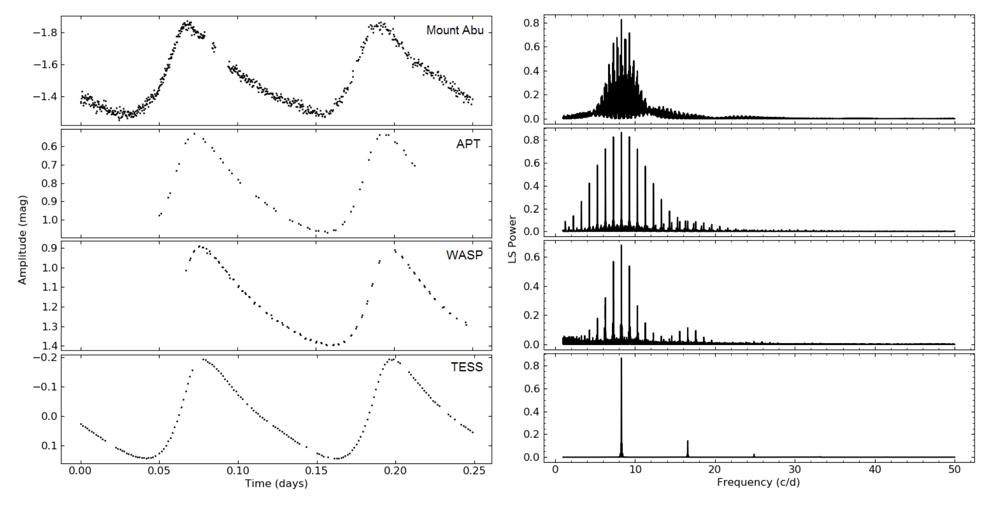

STATUS UPDATE: Visit TESS at AAS!
Hello TESS followers and welcome to the first news bulletin of the new year! This week we have three papers from the archive, but first a few reminders.
The Cycle 4 proposal deadline is on the 22nd of January, and remember this time we are following a dual anonymous process. For more information about the Cycle 4 call for proposals please view the solicitation. We have also constructed several templates to help you with your proposals.
Remember also that next week is the 237th AAS meeting. TESS GI office members will be working in the exhibit booth "NASA Exoplanets: ExEP, NExScI, and TESS". If you are attending AAS feel free to stop by this booth and ask us any TESS related questions. Note that we also have a webinar on Monday January 11th, 12:30-1:00pm, see the advert below and our webinar page, where you can download a copy of the tutorial we will be reviewing and get the dates of all of our AAS events.

Now onto our featured papers.
TESS Delivers Five New Hot Giant Planets Orbiting Bright Stars from the Full Frame Images (Rodriguez et. al., 2021):
Using photometry from TESS full framed images and followup spectroscopy from TFOP, the authors have discovered and characterized five new hot and warm Jupiters TOI-628 b (TIC 281408474; HD 288842), TOI-640 b (TIC 147977348), TOI-1333 b (TIC 395171208, BD+47 3521A), TOI-1478 b (TIC 409794137), and TOI-1601 b (TIC 139375960).
The five planets are all Jovian in size with radii ranging from 1.01-1.77 RJ, and masses from 0.85 to 6.33 MJ. The host stars of these systems are bright (9 < V < 10.8, 8.2 < K < 9.3) F and G stars, with temperatures ranging from 5595 ≤ Teff ≤ 6460 K.
Three of planets orbit sub giant host stars (TOI-640 b, TOI-1333 b, and TOI-1601 b), one of which (TOI-640 b) has an inflated radius and resides in an orbit with a period longer than 5 days. TOI-628 b is the most massive hot Jupiter discovery by TESS to date and has a mass of 6.31 MJ, with an eccentricity of 0.074. Of the five TOI-1478 b has the longest period, 10.18 days.
New constraints on the planetary system around the young active star AU Mic. Two transiting warm Neptunes near mean-motion resonance (E. Martioli et. al., 2020):
In this paper the authors analyze the TESS light curve for AU Mic, a young active star (recently a NASA feature) that is known to host a planet. Using the light curve the quasi-periodic rotational modulation by star-spots is modeled, simultaneously to the flaring activity and planetary transits.
Roughly 6.35 flares occur each day, with amplitudes ranging from 0.06% - 1.5% the flux of the star. To obtain the planetary parameters the authors apply a Bayesian MCMC analysis to the five transits of AU Mic. The planet to star ratio is measured as 0.05345, suggesting a physical radius of 4.38 M⊕, and a planet density of 1.1 g cm-3. All derived information points to a Neptune-size moderately inflated planet.
Further analysis of TESS data by the team also indicates that there may be two additional transit-like events, and thus a second planet. This second planet is also expected to be a warm Neptune given that the data indicates an orbital period of 18.86 days, a planetary radius of 3.51 R⊕, and an expected mass between 1.7 - 7 M⊕.
Asteroseismology of SZ Lyn using multi-band high time resolution photometry from ground and space (Adassuriya et al 2020):
Using a combination of ground-based photometry (Mt. Abu Infrared Observatory, Fairborn Observatory; archival observations from the WASP project) and TESS data, the authors examine SZ Lyncis - a binary star system in which one of the components is a δ Scuti star.
From the high cadenced TESS light curve there are 23 frequencies with four independent modes, 13 harmonics were of the main pulsation frequency of 8.297 d-1 or combinations thereof. This 8.297 d-1 was determined as the fundamental radial mode by the amplitude ratio method and using the estimated pulsation constant. Three new frequencies were also discovered at 14.535 d-1, 32.620 d-1, and 4.584 d-1. The first two are non-radial lower p-modes, with the latter a potential indiction of a g-mode in a δ Scuti star.
Using this newly determined information, physical parameters of the system were revised by the authors. A temperature of 7500 K ≤ Teff ≤ 7800 K, a log(g)=3.81, and a mass estimate of 1.7-2.0 M⊙.

Fig 1. Taken from Rodriguez et. al., (2021).The raw TESS Quick Look Pipeline 30-minute light curves for (top-left) TOI-628, TOI-640 (top-right), TOI-1333 (middle-left), TOI-1478 (middle- right), and TOI-1601 (bottom). The transits are highlighted in gray and were excluded from the global fit since they were flagged as bad quality by the pipeline

Fig 2. Taken from Martioli et. al., (2020). TESS light curve of AU Mic. Top panel shows the data for the first visit (2018-Jul-25 to 2018-Aug-22), and bottom panel shows the data for the second visit (2020-Jul-04 to 2020-Jul-30). Black points are the PDCSAP flux and vertical solid lines show the times of planetary transits, for AU Mic b (in orange) and AU Mic c (in green). Blue vertical dashed lines show the knots of selected ranges for the piece-wise polynomial fit and the red line shows the starspots model.

Fig 3. Taken from Adassuriya et. al., (2020). The high cadence light curves of ground- and space-based observations for 0.25 day coverage of SZ Lyn. The phases are synchronized at the peaks and hence the WASP and APT data do not start at 0. The power spectra in the frequency range 2 - 50 d−1 is shown in the right panel corresponding to each data source. V band light curves are shown for the Mount Abu and APT data. The amplitude of the light curves are in magnitude scale where the ground based data is differential and TESS fluxes are converted to magnitudes.